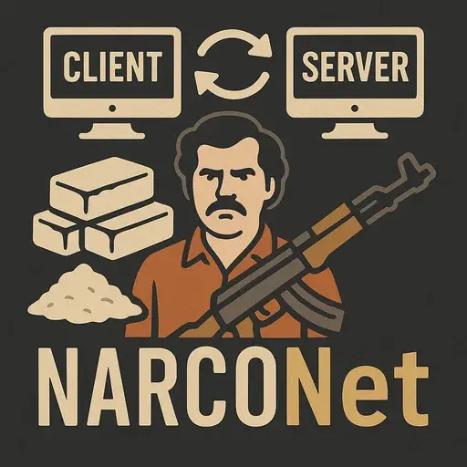

NARCONet - Mod Sync
- Downloads
- 10,530
- Favourites
- 19
- Mod lists
- 51
Security Notice:
For those downloading mods from a server. Please read the listing of the files that are being downloaded. Practice good cybersecurity and read before accepting updates.
Flir maintenance
I (flir) have take maintenance over from Beavis. I updated many things to squash a lot of bugs and race conditions. This mean YOU (the player) will need to remove all traces of the old versions (dlls in the BepInEx folder but also in the root of your game dir) before installing the new versions. If you do not follow this you’ll get strange errors: “Could not load MadManBeavis’s NarcoNet due to error hashing local files: Could not resolve type with token 01000097 from typeref (expected class ‘NarcoNet.Utilities.FileHash’ in assembly ‘NarcoNet.Utilities, Version=1.0.0.0, Culture=neutral, PublicKeyToken=null’)”
This error is because of a stale NarcoNet.Utilities.FileHash.dll somewhere in your THE CITY installation.
This operation is only needed once, during your first installation of my releases (v1.0.16 at the moment of writing). You will normally not need to do it each time.
What is NarcoNet?
NarcoNet is a powerful synchronization framework for SPT that automatically keeps all clients perfectly in sync with your server’s mod setup. No more manual file copying, no more “why isn’t this working?”, and no more mismatched versions causing mysterious bugs.
When a player connects to your server, NarcoNet automatically:
- Detects what mods and configs are missing or outdated
- Downloads required files directly from the server
- Removes incompatible or outdated mods
- Restarts the game (if needed) to apply changes seamlessly
It’s like having a personal dealer who always delivers exactly what you need, when you need it.
Key Features
Automatic File Synchronization
- Smart Change Detection - Uses a Git-like changelog system to track file additions, modifications, and deletions
- Incremental Updates - Only downloads what changed since last sync (no re-downloading everything)
- Fallback Support - Automatically falls back to full hash comparison if incremental sync fails
- Real-time Progress - Clean progress UI shows exactly what’s being synced
Configurable Sync Paths
- Server-Side Mods - Sync your SPT server mods automatically
- Client-Side Mods - Keep BepInEx plugins, patchers, and configs in sync
- Custom Paths - Add any directory you want to synchronize
- Exclusion Patterns - Use glob patterns to exclude specific files or directories
- Per-Path Control - Set paths as optional, enforced, silent, or restart-required
Intelligent Update System
- Live Updates - Non-restart-required mods apply instantly (like config changes)
- Restart Management - Core mods trigger automatic game restart with updater exe
- Integrity Checking - Fast file hashing ensures nothing gets corrupted
Zero-Configuration Client Experience
- Just Connect - Clients simply join the server, NarcoNet handles the rest
- Update Prompts - Clean UI shows what will be synced before proceeding
- Optional vs Required - Server can mark certain paths as optional for client choice
- Silent Mode - Server can push updates silently without user prompts
Server-Side Control
- YAML Configuration - Easy-to-edit config file for all settings
- Version Migration - Automatic config upgrades between NarcoNet versions
- Flexible Enforcement - Choose which paths are mandatory vs optional
- Startup Change Detection - Detects all file changes since last server startup
How It Works
Server
- On startup, NarcoNet scans configured sync paths and detects changes since last run
- Builds a changelog of all files
- Exposes HTTP endpoints for clients to query current state and download files
- Serves files directly from the SPT server installation
Client
- On game launch, connects to server and checks current hashes
- client does full hash comparison
- Downloads required files with progress tracking
- For non-restart paths: applies changes immediately
- For restart-required paths: rename in-use files to another name (.narconet_old) and places new files in their place then asks user to restart the game
- Upon restart narconet will cleanup all files with the (.narconet_old) extension as they are remnant of renamed files that could not be deleted/replaced when in use.
Version
1.0.16
[1.0.16] - 2026/04/10
- ADD: more exclusions for the headless client in the exclusion templates
- ADD: more server exclusions to avoid removing client generated files (those are added in the template and will be create in the config file if you start your server without a config file)
[1.0.15] - 2026/04/06
- FIX: a potential leak when some hashing errors occur because we did not catch the errors
- FIX: a potential issue with reactivating UI elements “blindly” (each frame) even it the game was trying to perform a transition and thus hiding our UI elements.
- FIX: in case a hashing error occurs, report it to the game error system and signal the plugin as “finished loading”.
Version
1.0.14
fix config file unzerialization error (bad template)
SKIP v1.0.13 and directly use v1.0.14
Version
1.0.13
[1.0.13] - 2026/03/10
- CHANGE: fix a subtle bug that could occur with overlapping sync paths and triggered a bad dedup bug on the client only, ending in removing the files because the server only had the files in the narrower sync path
- CHANGED: use sha256 for file hashing dropping old custom algos: less tricky code to maintain and less possible collision. A tad smaller but way safer.
[1.0.12] - 2026/03/10
- CHANGED: handle leftover empty dir deletion in one pass without restart
- CHANGED: added support for the rename strat for Win10 clients (not the same exception as windows 11)
- CHANGED: added support on client to delete folders when needed
- CHANGED: Added support for server sending empty folders to avoid clients deleting them (AmandsSense/sounds)
- CHANGED: Now all paths start from gameroot, no more “../” and “user” is now reached as “SPT/user”. A migration path updated the server config and for the client Exclusions.json file
- CHANGED: addressed potential threading issues by using volatiles for safety
- CHANGED: correct catch for potential exceptions to avoid letting download timeout slip through
- CHANGED: normalize the path separator to / everywhere for easier cross plateform support
- CHANGED: Use same regex/glob implementation on client and server (common lib)
- CHANGED: Removed the file sampling for big files in favor or full size hash slower but more accurate. Reliability first…
- CHANGE: remove file filtering in http listener (redundant)
- CHANGED: use constants everywhere instead of hard coded strings
- CHANGED: remove the migrator system (legacy) and its support file Version.txt
- CHANGED: remove the old RemovedFiles.json mechanism, not needed anymore since we now have a rename then delete special extension files on startup
- CHANGED: remove the client’s previous-state tracking file, that was only used for conserving client side server-deleted files. This mechanism is possible using the Exclusion.jons file on the client. It will only work if the deleted file is not in an enforced path (which is the desired outcome). This change makes the code slimer and easier to maintain.
[1.0.11] - 2026/03/09
- Fixed a bug where client default exclusions for headless would be applied on any client thus making DynamicMaps (and some others) impossible to sync from server…
- Removed incremental sync altogether, too brittle too little perf gains
[1.0.10] - 2026/03/08
- Long story short: dotnet9 exes don’t run on wine headless docker so we removed the updater and replaced its use by a simpler strategy, when a file is locked (in use) we rename it and the put the new one in place with the correct name, then on each startup we remove old renamed files which are not used anymore… This strategy works on Windows AND in the docker headless. And it also removes the need for a specific exe + a manifest file: Simpler is better :p
- FIXED: use gameroot for all file operations instead of GetCurrentDir
- CHANGED: normalized all paths so Linux clients work
[1.0.9] - 2026/03/07
- FIXED: use a shared HttpClient to avoid the overhead between small files
- ADDED: GZip compression
- CHANGED: 64 KB FileStream buffer instead of 4 KB for less IO overhead on the server
- FIXED: Normalized path management to avoid Linux clients (headless or other) to redownload all files because of “different path”.
[1.0.8] - 2026/03/07
- ADDED: a file progress bar to see bytes flowing and make sure something is being transfered.
- CHANGED: exclusion patterns to allow writing dir as “dir/” omitting the “**” at the end.
[1.0.7] - 2026/03/07
- FIXED: headless openend exclusion file and locked it while running.
- FIXED: headless reformatted exclusion file when it should only read it.
- FIXED: client had a fixed timeout even if data was flowing thus being unable to successfully download big files (hollywoodfx 1.2Gb)
[1.0.6] - 2026/03/07
- CHANGED: Added a FileSystemWatcher to pickup file changes while server is running. This allows admins to upload client-only plugins and just restart clients without a need to restart server.
- FIXED: in incremental sync, clients now skip download if local file already has the correct hash this occurred when a file was present on client before server added it
- CHANGED: server now always hashes the files without taking into account the size or timestamp. This is a tradeoff of some startup speed vs being certain we are 100% correct. I prefer 100% correct vs speed :p
- FIXED: the client downloaded excluded files before discarding them, now it only downloads what it needs
- FIXED: case sensitivity was not the same on server and client. Now both clients and servers will use case sensitive patterns.
[1.0.5] - 2026/03/07
- FIXED: a bug where the local exclusions (client side excludes) were not respected during the incremental sync (ie: exlusions only worked during the first run but never during subsequent runs)
- Added a dialog to allow client to keep files the server wants to delete while still accepting the update
- Skip-update nagging fix — added WriteNarcoNetData call in SkipUpdatingMods so PreviousSync.json stays current
- VerifyLocalFiles expansion — renamed from VerifyLocalEnforcedFiles and extended to check ALL sync paths, not just enforced ones
- Cleaned-up stale reference to non existing file: BepInEx/patchers/MadManBeavis-NarcoNet-Patcher.dll
- VerifyLocalEnforcedFiles now compares hashes to make sure a local file is valid instead of relying on the sole name.
- Sequence saved before downloads complete (NarcoPlugin.cs) Added _pendingSequence field to defer saving until after SyncMods() completes successfully Removed early SaveSyncState() calls from both incremental and full sync paths Sequence is now saved inside SyncMods() only after all downloads succeed When no downloads needed (UpdateCount == 0), sequence is saved immediately
- Semaphore leak in download retries (ServerModule.cs) Wrapped the entire retry loop in try/finally to guarantee limiter.Release() on all exit paths Previously, if all 5 retries failed and throw was hit, the semaphore slot leaked permanently
- Hash algorithm mismatch (SyncService.cs, deleted FileHasher.cs) Server now uses ImoHash (MetroHash128) from NarcoNet.Utilities — same as client Deleted FileHasher.cs (MD5-based, varint appended) which could never match client hashes Full sync hash comparisons will now work correctly
- Snapshot hashes never populated (SyncService.cs) BuildSnapshotAsync now accepts computeHashes parameter On first startup (no previous snapshot), all files are hashed during snapshot creation On subsequent startups, unchanged file hashes are carried forward from the old snapshot Prevents phantom “Modify” changelog entries
- No concurrency protection in ChangeLogService (ChangeLogService.cs) Added SemaphoreSlim(1,1) lock for all mutation operations Made _changeLog and _lastSnapshot fields volatile for thread-safe reads Double-checked locking pattern on LoadChangeLogAsync and LoadSnapshotAsync Created LoadChangeLogUnlockedAsync to avoid deadlock when lock is already held
- Incremental sync ignores local drift (NarcoPlugin.cs) Added VerifyLocalEnforcedFiles() method that checks enforced remote files exist locally Called after both incremental sync paths (new changes + no changes) Missing files are added to _addedFiles for re-download
- ImoHash doesn’t use FileShare.Read (ImoHash.cs) Added FileShare.Read to FileStream constructor to allow concurrent reads
- Double-deletion of enforced files (ClientSyncService.cs) Added !deleteRemovedFiles condition to the enforced deletion loop Now only runs the enforced loop when deleteRemovedFiles is off (as intended)
- Server re-hashes on every request (SyncService.cs) Added _hashCache field with SemaphoreSlim for thread-safe computation Only one hash computation runs at a time; concurrent requests share the result Cache is invalidated on startup change detection
- Dependencies: switched to avalonia UI instead of Winforms, this allows building the binary from a Linux machine (and thus easier CI builds). This also may allow better Linux client support (I do not use a Linux client to play so can’t say for sure)
Version
1.0.2
In version 1.0.2, there was a race condition:
- The code that processes files in parallel was previously using a
HashSetto collect results. HashSet<T>is not thread-safe: when multiple threads add items at the same time, it can corrupt internal state or throw exceptions.- That collection has been replaced with a
ConcurrentBag<T>, which is specifically designed for concurrent writes from multiple threads without additional locking.
In practical terms:
- Before: parallel file-processing tasks were all writing into a shared
HashSet, risking intermittent crashes, missing entries, or corrupted data under load. - After: the same work is still done in parallel, but results go into a
ConcurrentBag, so each thread can safely add items without stepping on each other.
So the race condition was resolved by switching to a thread-safe collection for shared parallel file processing, ensuring deterministic and stable behavior during synchronization.
Version
1.0.0
Initial Release